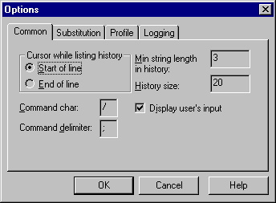

This is the first page of the "Options" dialog. You can set up common configuration parameters here.
- Cursor while listing history.This parameter defines where the cursor will be when a command is retreived (via the Up/Down buttons).
- Min string length in history.nbsp;nbsp;This parameter defines the minimum length of a command for it to be added to the command history. If you do not want short commands (usually movement commands) added to the command history, set this option to 2. If you set this option to 3, all commands shorter than 3 symbols will not be added to the command history.
- History size.nbsp;nbsp;This parameter defines the number of strings held in the command history. The default value is 20.
- Command char.nbsp;nbsp;This option is to define the character that JMC will interpret as a command for JMC. The default value is '#'.
- Command delimiter.nbsp;nbsp;This character is used to split up the user input. This allows you to type in several commands, all on the one line. For example, to eat a piece of bread and drink water, you might use the command: 'eat bread;drink water'. This results in two seperate commands being sent to the MUD, "eat bread" followed by "drink water". The default value is ';'.
- Display user's input.nbsp;nbsp;If you do not want your input to be displayed on the screen turn this option OFF. It's also useful when you work with a host or telnet server that echos your input (so you don't see your input twice).
See also: Substitution page Profile page Log parameters